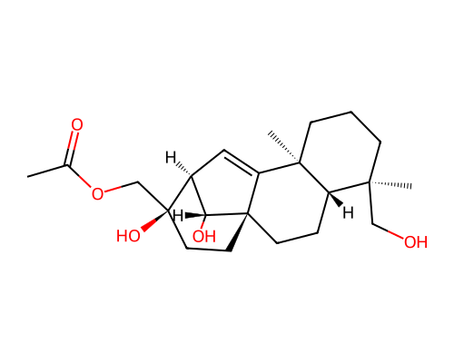
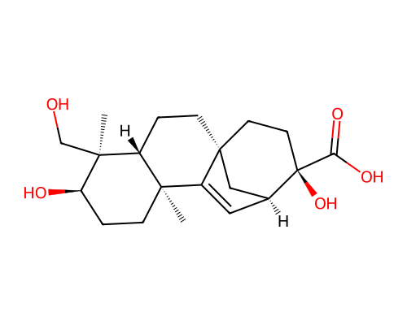

Botryotinia fuckeliana
- Collection location
- Western Pacific Ocean
- Ocean / sea
- Pacific Ocean
- Sampling depth
- 5572 m (reported in checked main text)
Source qualifications
Primary source checkedExcluded from coordinate analysis
Recorded organism, strain, collection context and compound-linked source evidence.
A source profile groups recorded name variants. Primary-source review, strain identification and sequence verification are separate evidence decisions.
Compound activities are not automatically attributable to this strain, sample or source publication.
| Structure | Compound | Formula | MW (g/mol) | Reported source depth | Classification | Activity records | Admitted evidence rows |
|---|---|---|---|---|---|---|---|
 Structure image unavailable Structure image unavailable | Botryotin AConnections → | C22H34O5 | 378.509 g/mol | 5572 m (reported in checked main text) | Terpenoid | 2 | 2 |
 Structure image unavailable Structure image unavailable | Botryotin BConnections → | C20H32O5 | 352.471 g/mol | 5572 m (reported in checked main text) | Terpenoid | 1 | 1 |
 Structure image unavailable Structure image unavailable | Botryotin CConnections → | C22H34O6 | 394.508 g/mol | 5572 m (reported in checked main text) | Terpenoid | 1 | 1 |
 Structure image unavailable Structure image unavailable | Botryotin DConnections → | C20H32O4 | 336.472 g/mol | 5572 m (reported in checked main text) | Terpenoid | 1 | 1 |
 Structure image unavailable | Botryotin EConnections → | C22H34O5 | 378.509 g/mol | 5572 m (reported in checked main text) | Terpenoid | 1 | 1 |
 Structure image unavailable | Botryotin FConnections → | C20H30O5 | 350.455 g/mol | 5572 m (reported in checked main text) | Terpenoid | 1 | 1 |
 Structure image unavailable Structure image unavailable | Botryotin GConnections → | C20H32O5 | 352.471 g/mol | 5572 m (reported in checked main text) | Terpenoid | 1 | 1 |
 Structure image unavailable Structure image unavailable | Botryotin HConnections → | C22H34O5 | 378.509 g/mol | 5572 m (reported in checked main text) | Terpenoid | 1 | 1 |
Up to two results per compound are shown. Open the compound record for all results, conditions and restrictions.
Shared cited references are prioritized where available. A shared reference does not establish a strain-specific assay or the same experimental sample.
| Product | Recorded results | Result evidence |
|---|---|---|
| Botryotin A | HL-60/BEL-7402/BIU-87/PANC-1/Hela-S3/ECA109/RAW264.7 IC50 > 20 μM (Author-reported common bound across the listed seven-cell panel; individual per-cell fitted values not reported here; panel includes RAW264.7.) Evidence detailsPrimary result checkedShared cited reference; experimental attribution unconfirmed RBL-2H3 IC50 = 0.2 mM Evidence detailsPrimary result checkedShared cited reference; experimental attribution unconfirmed | |
| Botryotin B | HL-60/BEL-7402/BIU-87/PANC-1/Hela-S3/ECA109/RAW264.7 IC50 > 20 μM (Author-reported common bound across the listed seven-cell panel; individual per-cell fitted values not reported here; panel includes RAW264.7.) Evidence detailsPrimary result checkedShared cited reference; experimental attribution unconfirmed | |
| Botryotin C | HL-60/BEL-7402/BIU-87/PANC-1/Hela-S3/ECA109/RAW264.7 IC50 > 20 μM (Author-reported common bound across the listed seven-cell panel; individual per-cell fitted values not reported here; panel includes RAW264.7.) Evidence detailsPrimary result checkedShared cited reference; experimental attribution unconfirmed | |
| Botryotin D | HL-60/BEL-7402/BIU-87/PANC-1/Hela-S3/ECA109/RAW264.7 IC50 > 20 μM (Author-reported common bound across the listed seven-cell panel; individual per-cell fitted values not reported here; panel includes RAW264.7.) Evidence detailsPrimary result checkedShared cited reference; experimental attribution unconfirmed | |
| Botryotin E | HL-60/BEL-7402/BIU-87/PANC-1/Hela-S3/ECA109/RAW264.7 IC50 > 20 μM (Author-reported common bound across the listed seven-cell panel; individual per-cell fitted values not reported here; panel includes RAW264.7.) Evidence detailsPrimary result checkedShared cited reference; experimental attribution unconfirmed | |
| Botryotin F | HL-60/BEL-7402/BIU-87/PANC-1/Hela-S3/ECA109/RAW264.7 IC50 > 20 μM (Author-reported common bound across the listed seven-cell panel; individual per-cell fitted values not reported here; panel includes RAW264.7.) Evidence detailsPrimary result checkedShared cited reference; experimental attribution unconfirmed | |
| Botryotin G | HL-60/BEL-7402/BIU-87/PANC-1/Hela-S3/ECA109/RAW264.7 IC50 > 20 μM (Author-reported common bound across the listed seven-cell panel; individual per-cell fitted values not reported here; panel includes RAW264.7.) Evidence detailsPrimary result checkedShared cited reference; experimental attribution unconfirmed | |
| Botryotin H | HL-60/BEL-7402/BIU-87/PANC-1/Hela-S3/ECA109/RAW264.7 IC50 > 20 μM (Author-reported common bound across the listed seven-cell panel; individual per-cell fitted values not reported here; panel includes RAW264.7.) Evidence detailsPrimary result checkedShared cited reference; experimental attribution unconfirmed |
Repeated source records are grouped with their associated compounds.
Associated compounds: Botryotin A
Associated compounds: Botryotin B
Associated compounds: Botryotin C
Associated compounds: Botryotin D
Associated compounds: Botryotin E
Associated compounds: Botryotin F
Associated compounds: Botryotin G
Associated compounds: Botryotin H